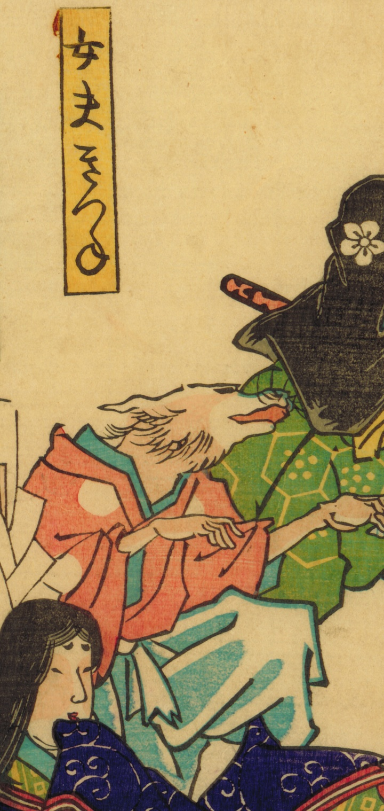

女夫きつね；メオトキツネ，狐；キツネ

装束を着た狐が指をさしながら笑っている。
著作者：不明／出典：親書誌：U426_nichibunken_0470：狂画こん會；キョウガコンカイ／日付：2025／資源識別子：U426_nichibunken_0470_0001_0000
Copyright (c)2010- International Research Center for Japanese Studies, Kyoto, Japan. All rights reserved.